صفحه ۱۷۳
طراحی نوار ناوبری
کار کارگاهی
در این کارگاه، نوار ناوبری بوتاسترپ را با قابلیت جمع شدن، به صفحه index.html اضافه خواهید کرد. قبل از انجام این کار، کد مربوط به top-menu را حذف کنید یا آن را بهطور کامل درون علائم <-- --!> قرار دهید تا مرورگر محتوای آن را تفسیر نکند.
عملکرد صحیح نوار ناوبری نیازمند فایل bootstrap.bundle.min.js است. اگر این فایل در بخش <head> یا قبل از <body/> موجود نیست، آن را مطابق توضیحات استفاده از CDN در صفحه وب به صفحه اضافه کنید و گرنه با کلیک روی دکمه همبرگری (☰)، محتوای آن نمایش داده نخواهد شد.
کدهای شکل زیر را جایگزین عنصر top-menu نمایید:
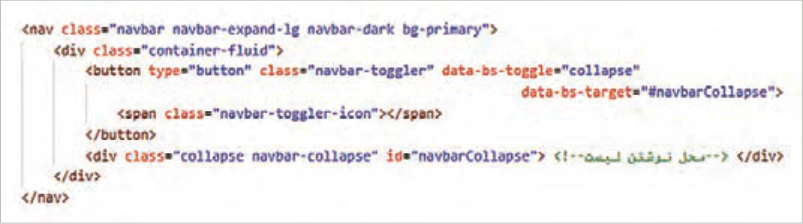
کد بالا شامل دو عنصر «دکمه» و «ناحیه قابل جمع شدن» است. برای ایجاد دکمه از برچسب <button> استفاده شده است. درون این برچسب یک عنصر <span> با کلاس -navbar-toggler icon قرار دارد که موجب نمایش یک آیکن سه خطی میگردد.
محتوای لیست درون یک عنصر نگهدارنده با شناسه navbar Collapse قرار گرفته است. انتظار میرود که با کلیک روی دکمه منو، ناحیه حاوی لیست باز شود. بدین منظور از ویژگی data-bs-target با مقدار navbarCollapse# استفاده شده است.
"data-bs-target="#navbarCollapse شناسه (ID) منویی را مشخص میکند که باید باز یا بسته شود.
ویژگی "data-bs-toggle="collapse باعث میشود که با کلیک روی دکمه، عمل باز و بسته شدن منو انجام شود.
رنگ نوار ناوبری توسط bg-primary تعیین شده است در صورت تمایل میتوانید از سایر کلاسهای رنگ زمینه استفاده نمایید.
کلاس collapse باعث میشود که محتوای داخل div بهصورت جمعشده (collapsed) باشد و با دکمه toggle باز/بسته شود. (این کلاس قابلیت باز و بسته شدن محتوا را فعال میکند.) کلاس navbar-collapse باعث میشود که هنگام باز شدن منو، لینکها بهصورت عمودی (زیر هم) قرار گیرند و مقدار فضای داخلی (padding) منو بهصورت استاندارد و هماهنگ با سایر اجزای ناوبری باشد. در صورتیکه فقط از collapse استفاده شود لینکهای منو ظاهر نامرتبی خواهند داشت.
صفحه ۱۷۴
حالا نوبت نوشتن لیست عناصر منو است. کد شکل زیر را در محل تعیینشده در کد قبل اضافه کنید:
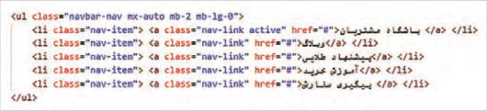
در عنصر والد لیست (ul) از کلاس navbar-nav و در عناصر لیست از کلاس .nav-item استفاده شده است. در حالت پیشفرض گزینههای منوی ناوبری در سمت راست صفحه ظاهر میشود. برای تنظیم حاشیه چپ و راست منو از کلاس mx-auto استفاده شده است.
فایل را ذخیره کنید و نتیجه را در مرورگر بررسی کنید.
کلاس navbar-expand-lg باعث میشود که نوار منو در پهنای بالاتر از 992 پیکسل بهصورت افقی ظاهر گردد. پارامتر lg را به md تبدیل کنید و نتیجه تغییر را بررسی کنید.
در سایتهای فروشگاهی، منوی ناوبری در نمای موبایل و تبلت پنهان میشود، کلاسهای d-none و d-md-block را به عنصر nav اضافه کنید و نتیجه را در نمای موبایل و تبلت بررسی کنید.
کنجکاوی
کلاس active که فقط روی گزینه اول اعمال شده است چه تأثیری در ظاهر گزینه دارد؟
گزینه اول اغلب سایتهای فروشگاهی «دستهبندی محصولات» است که حاوی لیستی از طبقهبندی محصولات میباشد. برای ایجاد این گزینه، کد شکل زیر را قبل از اولین عنصر لیست فوق (باشگاه مشتریان) اضافه کنید:
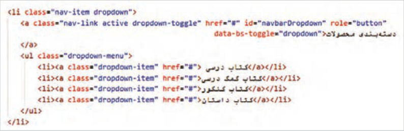
nav-item: برای هر یک از گزینههای منو بهکار میرود.
صفحه ۱۷۵
dropdown: این کلاس برای عنصر حاوی زیرمنو بهکار میرود.
nav-link: برای استایلدهی به لینکهای نوار ناوبری (Navbar) استفاده میشود و لینک را مطابق استایل Navbar نمایش میدهد.
active: این کلاس ظاهر یک گزینه را متفاوت (ضخیمتر) از سایر گزینهها نمایش میدهد و بهمعنای فعال بودن یک گزینه است.
dropdown-toggle: این کلاس به جاوااسکریپت بوتاسترپ اطلاع میدهد که این عنصر قابلیت باز و بسته شدن دارد، همچنین یک فلش کوچک ▼در کنار گزینه منو اضافه میکند که بهمعنای داشتن زیر منو است.
"data-bs-toggle="dropdown: برای فعالسازی عملکرد دو حالته منو (باز و بسته) کاربرد دارد.
dropdown-menu: این کلاس معمولاً برای عنصر <ul> بهکار میرود و باعث میشود که محتوای لیست بهصورت یک جعبه پنهان در زیر گزینه منو قرار گیرد.
dropdown-item: برای تعیین استایل هر یک از گزینههای منوی کشویی کاربرد دارد.
کلاس active را از گزینه اول لیست مرحلۀ قبل(باشگاه مشتریان)، حذف کنید. فایل را ذخیره کنید.
انتظار میرود که نتیجۀ زیر حاصل شود:
همانطورکه گفته شد، کلاس dropdown-toggle باعث نمایش فلش رو به پایین میشود. در صورت تمایل میتوانید آن را حذف کنید، اما لازم است که با افزودن استایل زیر، نمایش زیرمنو را در حالت hover فعال کنید:
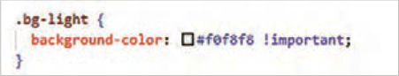
نکته
با توجه به اینکه رویداد hover در نمای موبایل اتفاق نمیافتد، پس این کد فقط در نمای دسکتاپ عمل میکند.
دکمهها دکمه یکی از عناصر تعاملی صفحه است که امکان انجام یک عملیات را با کلیک کاربر فراهم میکند. ایجاد دکمه در صفحه وب از طریق سه برچسب زیر امکان پذیر است:
a< 3>
صفحه ۱۷۶
در بوتاسترپ، کلاسهای مختلفی برای استایلدهی به دکمهها وجود دارد. این کلاسها به شما امکان میدهند تا ظاهر دکمهها را از نظر رنگ، اندازه، و سایر ویژگیها سفارشی کنید. برای تعیین ظاهر دکمه توسط کلاسهای بوتاسترپ، استفاده از کلاس btn ضروری است. برای انتخاب رنگ و اندازه دکمه میتوان کلاسهای دیگر مربوط به دکمه را نیز به کلاس btn اضافه نمود.
این کلاس بهصورت خلاصه در جدول ١١ آمده است:
جدول 11 کلاسهای دکمه در بوت استرپ
نوع کلاس
نام کلاسها
رنگ
btn-primary، btn-secondary، btn-danger، btn-light، btn-dark، btn-link و...
خط دور دکمهها
btn-outline-primary، btn-outline-secondary و....
اندازه دکمههاbtn-sm، btn-lg وضعیت غیرفعالdisabled
مثال
در مثال زیر شش دکمه با برچسبها و کلاسهای مختلف ایجاد شده است:
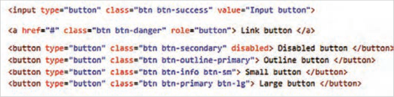
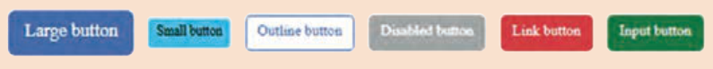
بیشتر بدانید
طرحبندی صفحه اختصاصی محصول در این کارگاه، صفحه نمایش اطلاعات محصول را در سه ستون حاوی تصویر محصول، ویژگیهای محصول و قیمت محصول طراحی خواهید کرد. در این صفحه بخش header و footer مشابه فایل index.html است، فقط در بخش main دارای محتوای متفاوت است. جهت سرعت گرفتن کار طراحی، یک کپی از فایل index.html ایجاد کنید. برای این کار فایل index.html را در ویرایشگر متنی باز کنید. از منوی File گزینه Save As را انتخاب کنید و سپس عبارت product-details.html را بهعنوان نام صفحه بنویسید.
صفحه ۱۷۷
محتوای برچسب <main> را بهطور کامل پاک کنید. فایل را ذخیره کنید و صفحه product-details را در مرورگر به نمایش بگذارید تا از درستی عملکرد خود اطمینان حاصل کنید. در این مرحله صفحه product-details باید حاوی نوار بنر بالای صفحه، نوار لوگو، نوار ناوبری و فوتر باشد.
کد شکل زیر را برای طرحبندی صفحۀ محصول درون برچسب <main> بنویسید:
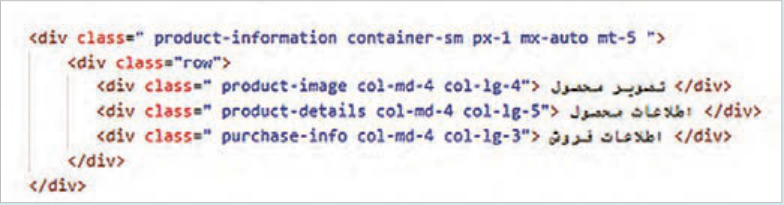
در این طرحبندی از سیستم Grid استفاده شده است. سهم ستونها در دستگاههای 992 پیکسل و
__4 ، 12
__5
__3 است. در پهنای 768 تا 992 پیکسل سهم هر ستون برابر 12
__4 است و در
بزرگتر برابر 12
و 12
دستگاههای کوچکتر محتوای ستونها روی هم قرار میگیرند.
پهنای عنصر product-information را به شکل زیر در فایل styles.css تعریف کنید:
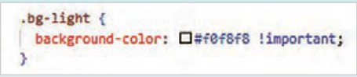
تصویر کتاب «دانش فنی پایه» را به شکل زیر به ستون اول اضافه کنید:
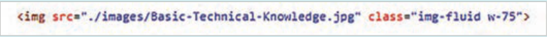
برای اینکه تصویر محصول در تمام دستگاهها در وسط ستون قرار گیرد، کلاسهای d-flex، -justify content-center و align-items-center را به ستون اول، بعد از کلاس col-lg-4 اضافه کنید:
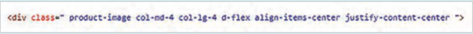
برای اینکه اندازۀ تصویر در دستگاههای کوچکتر از 768 پیکسل کنترل شود، استایل زیر را به فایل styles.css اضافه کنید:
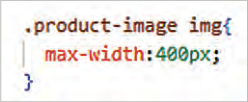
صفحه ۱۷۸
محتوای ستون دوم را بهصورت شکل زیر بنویسید:
کلاس fs-3 اندازه متن و کلاس text-sm-end تراز متن را (در سمت راست ستون) تعیین میکند.
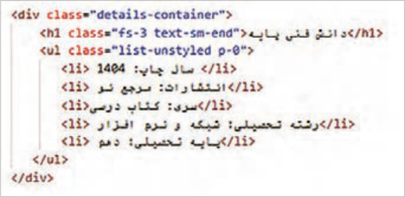
استایل محتوای ستون دوم را مطابق شکل زیر تنظیم کنید:
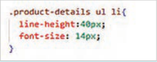
در نمای موبایل، محتوای ستون دوم به لبۀ سمت راست مرورگر میچسبد و جلوه خوشایندی ندارد. برای اینکه محتوا از سمت راست فاصله بگیرد، بهطوریکه در وسط ستون قرار گیرد، محتوای ستون دوم، درون عنصر div با کلاس details-container قرار گرفته است. ویژگیهای این عنصر را مطابق شکل زیر تنظیم کنید:
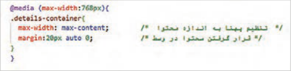
کد نوشته شده در شکل زیر را درون ستون سوم وارد کنید:
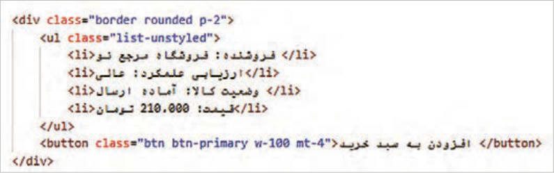
صفحه ۱۷۹
استایل محتوای ستون سوم را به مطابق شکل زیر بنویسید:
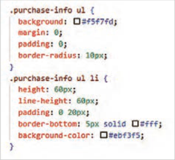
انتظار میرود که نتیجۀ کار در دستگاههای 992 پیکسل و بزرگتر به شکل زیر باشد:
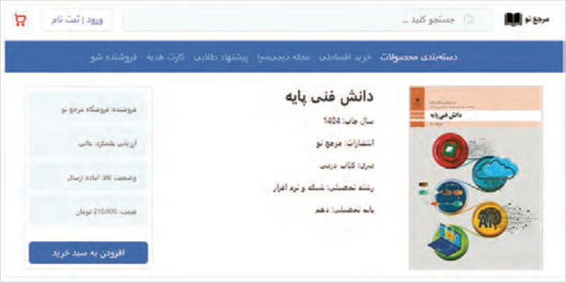
فعالیت
در فایل index.html محصول «دانش فنی پایه» را به صفحۀ product-details.html پیوند دهید.
فرمها فرمهای ورود اطلاعات، ابزارهایی برای تعامل کاربر با صفحه و جمعآوری اطلاعات هستند. ظاهر فرمهای ورود، نقشی حیاتی در تجربۀ کاربری و موفقیت یک وبسایت دارد. فرمهای جذاب و کاربرپسند، باعث افزایش تعامل کاربران و ایجاد حس اعتماد و رضایت میشوند. در مقابل، فرمهای نامرتب و گیجکننده میتوانند منجر به سردرگمی کاربران، افزایش نرخ خروج از صفحه و در نهایت کاهش اعتبار وبسایت شوند.
Page 173
Designing the navigation bar
Workshop
In this workshop you will add a Bootstrap navigation bar with a collapse feature to the index.html page. Before you do this, delete the code related to top-menu, or place it completely inside <-- --!> marks so the browser does not interpret its content.
Correct operation of the navigation bar requires the bootstrap.bundle.min.js file. If this file is not present in the <head> section or before </body>, add it to the page according to the instructions for using a CDN on a web page; otherwise, when you click the hamburger button (☰), its content will not be displayed.
Replace the top-menu element with the code in the figure below:
The code above includes two elements: a “button” and a “collapsible area.” The <button> tag is used to create the button. Inside this tag there is a <span> element with the navbar-toggler-icon class that displays a three-line icon.
The list content is placed inside a container element with the id navbarCollapse. You are expected that when you click the menu button, the area containing the list opens. For this purpose the data-bs-target attribute with the value #navbarCollapse is used.
"data-bs-target="#navbarCollapse specifies the identifier (ID) of the menu that should open or close.
The "data-bs-toggle="collapse attribute makes the menu open and close when you click the button.
The color of the navigation bar is set by bg-primary. If you wish, you can use other background color classes.
The collapse class makes the content inside the div collapsed, and it opens/closes with the toggle button. (This class enables the ability to open and close the content.) The navbar-collapse class makes the links stack vertically (one under another) when the menu opens, and makes the menu’s inner space (padding) standard and coordinated with the other navigation components. If you use only collapse, the menu links will look untidy.
Page 174
Now it is time to write the list of menu items. Add the code in the figure below in the place set aside in the previous code:
On the parent element of the list (ul) the navbar-nav class is used, and on the list items the .nav-item class is used. By default the navigation menu options appear on the right side of the page. The mx-auto class is used to set the left and right margin of the menu.
Save the file and check the result in the browser.
The navbar-expand-lg class makes the menu bar appear horizontally at widths above 992 pixels. Change the lg parameter to md and check the result of the change.
On shopping sites, the navigation menu is hidden in the mobile and tablet views. Add the d-none and d-md-block classes to the nav element and check the result in the mobile and tablet views.
Try this
What effect does the active class, which is applied only to the first option, have on the appearance of that option?
The first option on most shopping sites is “Product categories,” which contains a list of product classifications. To create this option, add the code in the figure below before the first list item above (Customers club):
nav-item: Used for each of the menu options.
Page 175
dropdown: This class is used for the element that contains the submenu.
nav-link: Used to style the links in the navigation bar (Navbar) and displays the link according to the Navbar style.
active: This class makes one option look different (thicker) from the other options and means that an option is active.
dropdown-toggle: This class tells Bootstrap’s JavaScript that this element can open and close; it also adds a small arrow ▼ next to the menu option, which means it has a submenu.
"data-bs-toggle="dropdown: Used to enable the two-state behavior of the menu (open and close).
dropdown-menu: This class is usually used for a <ul> element and makes the list content appear as a hidden box under the menu option.
dropdown-item: Used to set the style of each option in the drop-down menu.
Remove the active class from the first option of the previous list (Customers club). Save the file.
You are expected to get the result below:
As stated, the dropdown-toggle class displays a downward arrow. If you wish you can remove it, but you need to enable showing the submenu on hover by adding the style below:
Note
Because the hover event does not occur in the mobile view, this code works only in the desktop view.
Buttons. A button is one of the interactive elements of a page that lets the user perform an action with a click. Creating a button on a web page is possible with the three tags below:
a< 3>
Page 176
In Bootstrap there are various classes for styling buttons. These classes let you customize the appearance of buttons in terms of color, size, and other properties. To set the appearance of a button with Bootstrap classes, using the btn class is required. To choose the color and size of the button you can also add other button-related classes to the btn class.
These classes are summarized in Table 11:
Table 11 Button classes in Bootstrap
Class type
Class names
Color
btn-primary، btn-secondary، btn-danger، btn-light، btn-dark، btn-link و...
Button borders
btn-outline-primary، btn-outline-secondary و....
Button sizes btn-sm, btn-lg Disabled state disabled
Example
In the example below, six buttons with different labels and classes have been created:
Learn more
Layout of the product detail page. In this workshop you will design the product information page in three columns containing the product image, product features, and product price. On this page the header and footer sections are the same as in the index.html file; only the main section has different content. To speed up the design work, create a copy of the index.html file. To do this, open the index.html file in a text editor. From the File menu choose Save As and then type product-details.html as the page name.
Page 177
Clear the content of the <main> tag completely. Save the file and display the product-details page in the browser to make sure you have done this correctly. At this stage the product-details page should contain the banner bar at the top of the page, the logo bar, the navigation bar, and the footer.
Write the code in the figure below inside the <main> tag for the product page layout:
In this layout the Grid system is used. The column shares on devices 992 pixels and
larger are 4/12,
5/12,
and 3/12. At widths from 768 to 992 pixels each column’s share is 4/12,
and on
smaller devices the column contents stack on top of each other.
Define the width of the product-information element as shown below in the styles.css file:
Add the image of the book “Basic Technical Knowledge” to the first column as shown below:
So that the product image is centered in the column on all devices, add the d-flex, justify-content-center, and align-items-center classes to the first column after the col-lg-4 class:
So that the image size is controlled on devices smaller than 768 pixels, add the style below to the styles.css file:
Page 178
Write the content of the second column as shown below:
The fs-3 class sets the text size and the text-sm-end class sets the text alignment (on the right side of the column).
Set the style of the second column’s content as shown below:
In the mobile view, the content of the second column sticks to the right edge of the browser and does not look pleasant. So that the content has space from the right and sits in the middle of the column, the content of the second column is placed inside a div element with the details-container class. Set the properties of this element as shown below:
Enter the code written in the figure below into the third column:
Page 179
Write the style of the third column’s content as shown below:
You are expected that the result on devices 992 pixels and larger looks like the figure below:
Activity
In the index.html file, link the product “Basic Technical Knowledge” to the product-details.html page.
Forms. Data-entry forms are tools for user interaction with the page and for collecting information. The appearance of entry forms plays a vital role in the user experience and the success of a website. Attractive and user-friendly forms increase user interaction and create a sense of trust and satisfaction. In contrast, messy and confusing forms can lead to user confusion, a higher bounce rate, and ultimately lower credibility for the website.